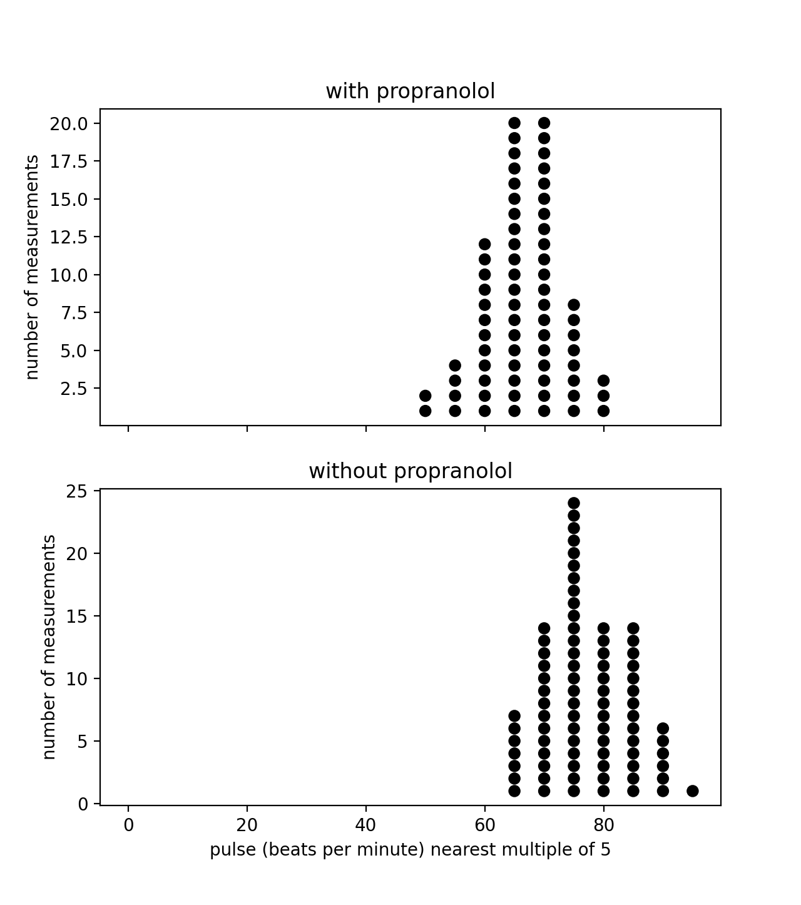

My Health Condition
I have a health problem characterized by pain in my forehead every hour of every day. I also get migraine attacks a few times a week. The migraine attacks started gradually around 2018, and the persistent head pain started more recently. Here are some treatments I have tried: magnesium, sumatriptan, amitriptyline, riboflavin, coenzyme Q10, Nurtec (rimegepant), propranolol, Emgality (galcanezumab), topiramate. I am currently (2021-09-06) writing down my health experiences in a Google sheet, including almost everything I eat, multiple numbers describing my condition, lots of text, and all medication I take. I have written python programs that analyze this data.
Here are some findings:
Attack Frequency by Day of Week
I have been much more likely to have migraine attacks on Sundays than other days of the week. The strength of this has varied from semester to semester. Here I present my findings by 4-month periods:- 2019-09-01 to 2019-12-31: p=0.002; I was more likely to have attacks on Sundays during this period.
- 2020-01-01 to 2020-04-30: p=0.5; I was not more likely to have attacks on Sundays during this period.
- 2020-05-01 to 2020-08-31: p=0.5; I was not more likely to have attacks on Sundays during this period.
- 2020-09-01 to 2020-12-31: p=0.02; I was more likely to have attacks on Sundays during this period, but not as much as during some of the other periods.
- 2021-01-01 to 2021-04-30: p=0.005; I was more likely to have attacks on Sundays during this period.
- 2021-05-01 to 2021-08-31: p=0.0001; I was more likely to have attacks on Sundays during this period.

I do not know what causes these trends.
Propranolol
Propranolol is one of the many medications I have been prescribed. As a nonselective beta blocker, propranolol's primary action is reducing pulse [1][2]. To measure my pulse, I have been using a mobile app called StressCam. This app is old, so its website, stress-cam.com, has been taken down. It only works on my older iPhone and not my newer one.The following image shows that propranolol lowered my pulse. The dosage of propranolol varied.

Foods
I have also found that what I eat has little effect on my health other than making me vomit sometimes. Some foods have statistically significant correlations:- I tend to not eat apples on Saturdays (p=0.003). Since I tend to have attacks on Sundays, this caused a correlation between apples and attacks that led me to investigate apples as a dietary treatment for my condition. But when I did day-of-week analysis, I found that this was caused by a day-of-week trend.
- The day before I eat potatoes, I tend to have less head pain. (p=0.005). Potatoes do not have any day-of-week correlation.
Amitriptyline
This is the only medication that I know caused side effects. To anyone taking this medication here is my warning: the withdrawal was 100 times as severe as starting the medication. It is far more difficult to stop this medication than start it.
Conclusion
I have a history of believing a treatment works for my migraine headaches but deciding it does not work months later. I followed this pattern with magnesium, sumatriptan, Nurtec, propranolol, and topiramate. Currently, I do not know that any treatments have helped my condition. Now that I have followed this pattern multiple times, I am very skeptical when someone says a treatment helped their chronic condition.Here is another graph:
 Click here to go to the index page of my website
Click here to go to the index page of my website